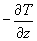

Home
Home

Please review the introductory notes on the 'Structure of the Model' with regards to the Planetary Boundary Layer before proceeding.
We are all familiar with the idea that temperature decreases with height; if you don't believe this, stick your head out of an airplane, or, better yet, look at the 200 mb (40,000 ft level) temperatures on the wall of the Penn State Weather Station. If we lift a parcel, or 'blob', of air dry adiabatically (without any addition or subtraction of heat) the air parcel expands and the temperature decreases by an amount approximately equal to 10° C per kilometer. This is called the dry adiabatic lapse rate of temperature, and pertains to situations where parcels of air are lifted or lowered in the atmosphere; (A sinking parcel of air would see its temperature increase by 10° C per kilometer). Customarily, lapse rate is defined mathematically as  where the minus sign is simply present to make the quantity usually positive.
The atmosphere as a whole, however, changes its vertical temperature profile as different air masses are brought into varying levels of the atmosphere. The change in temperature with height of the atmosphere itself is called the environmental lapse rate. Under normal circumstances, temperature decreases with height, sometimes by more than 10° C per kilometer, and sometimes by less. On the average temperature decreases at a rate of about 5° C per kilometer. An environmental lapse rate of 10° C per kilometer (dry adiabatic) in a column of air will result from completely mixing parcels of air in that column dry adiabatically. Turbulent heating and mixing of an air column will result in the formation of uniform heat content, a uniform distribution of passive constituents, such as water vapor and dust, and is called the mixing layer or sometimes just the mixed layer. When temperature increases with height, we say that there is a temperature inversion. This typically occurs near dawn as the air nearest the Earth has cooled off more rapidly than the air above it due to radiational cooling.
Now, if we return to the classic conduction laws and our discussion of resistances, we note that heat should be conducted down a temperature gradient. Since we are talking about sensible heat, the appropriate gradient for the conduction of sensible heat is not the temperature but the potential temperature. The potential temperature is simply a temperature normalized for adiabatic compression or expansion, i.e. it is defined as the temperature an air parcel would be if it were brought down or up dry adiabatically to some reference level (1000 Mb). Therefore, if the measured temperature at 2000 meters above the 1000 Mb level was 12° C, the potential temperature of that level would turn out to be 32° C, using the dry adiabatic lapse rate for lowering a parcel of air by 2 km to 1000 Mb. In meteorology, the reference level is arbitrarily chosen as 1000 Mb; in the model the reference level for all calculations is the ground surface, but potential temperature is still accounted for in the conventional manner in the output. (The difference between actual temperature and potential temperature is unimportant over the depth of the surface layer (50 m), so we will henceforth simply refer to the temperature when discussing vertical derivatives in the surface layer.) It should be noted, however, that surface radiant temperature is actual temperature.
In a statically stable atmosphere, one where vertical air motions are suppressed, potential temperature increases with height. As we shall see, the atmosphere is almost everywhere statically stable, except over shallow layers, such as those in immediate contact with the ground (the surface layer). The mixing layer (typical depth 1-3 km) grows with time in the model, and takes sensible heat flux at the ground surface and distributes it within a layer of constant potential temperature above the surface layer. (A minor limitation of the model is that it automatically mixes potential temperature evenly in the mixing layer. We could have computed potential temperature in the mixing layer differently, allowing it to evolve more naturally, but we didn't feel at the time that it was worth the added computational effort.)
The environmental lapse rate of temperature is directly tied to the atmospheric static stability. When the environmental lapse rate is exactly dry adiabatic (10° C per kilometer), there is zero variation of potential temperature with height and we say that the atmosphere is in neutral equilibrium. Under these conditions, a parcel of air forced upwards (downwards) will stay where it is once moved, and not tend to sink or rise after released because it will have cooled (warmed) at exactly the same rate as the environment. (here we are taking the liberty to ignore small effects due to the differences between parcel and environmental water vapor. Strictly speaking, buoyancy must be evaluated with respect to air density differences rather than air temperature differences.) When the environmental lapse rate of potential temperature increases with height, the atmosphere is statically stable. The more stable the environment, the more the atmosphere resists convective overturning by air motions. If a parcel of air were brought upwards (downwards) in a statically stable environment, it would tend to sink (rise) back to its original level once released because it will have cooled (warmed) more rapidly than the environment and will be like a stone in a glass of water (cooler = more dense). If the environmental lapse rate of potential temperature decreases with height, the atmosphere is said to be statically unstable with respect to dry adiabatic processes. Under these circumstances, a parcel of air brought upwards (downwards) would tend to keep rising (sinking) once released because it will have cooled (warmed) less rapidly than the environment and will be more buoyant than the surrounding environment (like a hot air balloon). It is a statically unstable environment which promotes the formation of convective clouds and thunderstorms. As stated, however, the environment is almost always statically stable on the large scale.
Of less importance, but you might as well know it, is that the model also computes a the downward flux of sensible heat flux at the top of the mixing layer; this flux is entrained from above because the mixing layer rises into air with a higher potential temperature (under typical, statically stable conditions). The top of the mixing layer is actually crowned with a small inversion, called a mixing inversion. Both momentum and specific humidity are mixed by diffusion using mixing coefficients that depend on the magnitude of the sensible heat flux and the wind speed. As the mixing layer grows with time, drier air from above the mixing layer (the usual case) and faster moving air from above (also the usual case) are mixed down into the mixing layer within which both specific humidity and momentum tend to be fairly evenly mixed.
In examining the vertical profile of temperature (environmental lapse rate) as the surface layer evolves, we notice that the surface temperature is warmer than the air temperature at 50 m during the day, and is cooler at night. At night the ground cools with time, as does the atmosphere near the ground, including the bottom part of the day's mixing layer. This leads to the formation of an inversion near the ground at night. This also makes sense in view of our conduction laws, because the sensible heat flux is upward during the day (down the potential temperature gradient) and downward at night.
However, consider the following paradox: the difference between the surface temperature and that at the top of the surface layer (50 m) is about the same during the day as at night (except that the signs are reversed), but the nighttime sensible heat flux is rather minuscule. One might wonder why the magnitude of the nocturnal sensible heat flux is so trivial if the vertical gradient of potential temperature is the same as during the day (when the sensible heat flux is quite significant) as at night?
Simulations (Level 1)
Simulation 1:
Change the static stability
Perform a default simulation, then one where the temperatures of the lowest four layers of the atmosphere are made more stable. Create a slight inversion in these layers, for example, keep 24° C at the surface, then increase the three layers above the surface to 25, 26 and 27° C. Graph the 1.5 m temperature and the 50 m temperature as well as the surface fluxes and compare the two runs.
Questions
Simulation 2:
Vary the surface moisture availability
Redo your moisture availability simulations using a low (0.1) and a high moisture availability (0.9). Watch the growth of the mixing layer as reflected in the vertical profile of wind speed, potential temperature and specific humidity.
Questions
Simulations (Level 2)
Simulation 1:
The Los Angeles (L.A.) area is known for its smoggy and hazy conditions where a large amount of pollution and water vapor is trapped near the ground. Due to a stable atmosphere, the mixing layer of the L.A. basin is very shallow. An obvious solution to their problem would be to reduce the release of harmful pollutants into the atmosphere. Simulate what effect a reduction in pollutants would have on the mixing layer depth by treating pollutants as water vapor in the model. (Water vapor and pollutants tend to absorb solar radiation.) In other words, create a very stable sounding with ample water vapor (representing both water vapor and pollutants). Then, reduce the water vapor considerably and view the effects on the mixing layer depth and temperature profile. Try the same thing by including a small cloud factor, say 0.1.
Questions
Using the same conditions for L.A. in the first simulation, observe what happens to the lapse rate at night and in the first part of the morning the next day; (you can observe the latter by letting the model run through the first few hours after dawn the next day). Find the bottom of the daytime mixed layer and note the top as well.
Questions
buoyancy
dry adiabatic
inversion
lapse rate
mixing inversion
potential temperature
static stability: neutral; stable; unstable